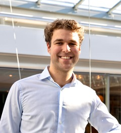
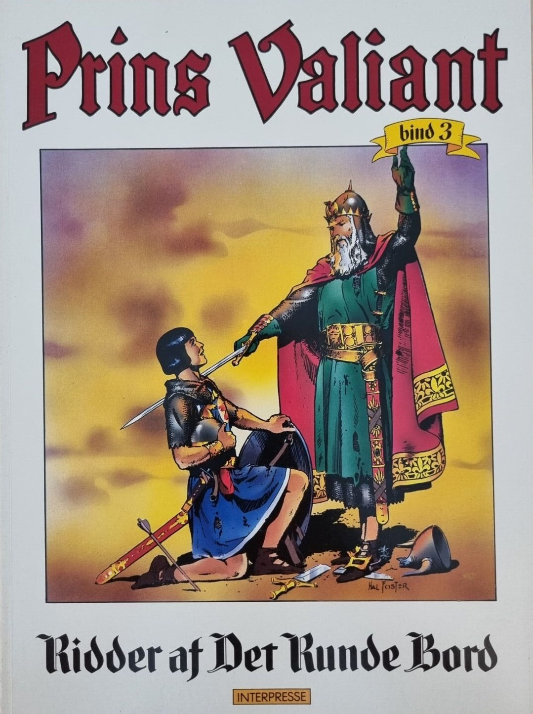
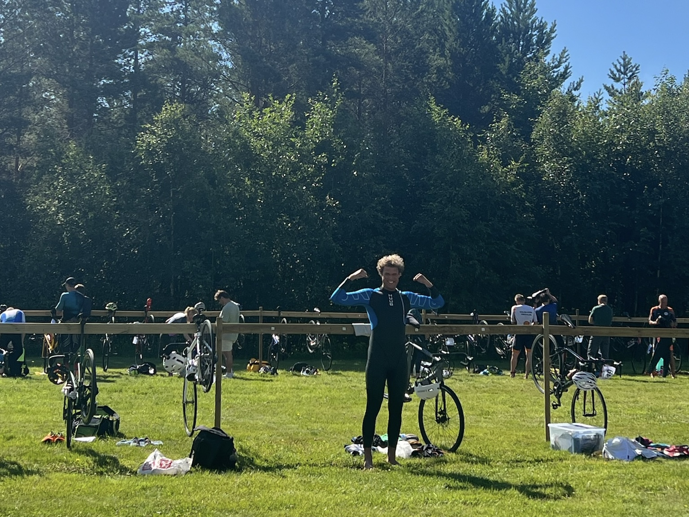
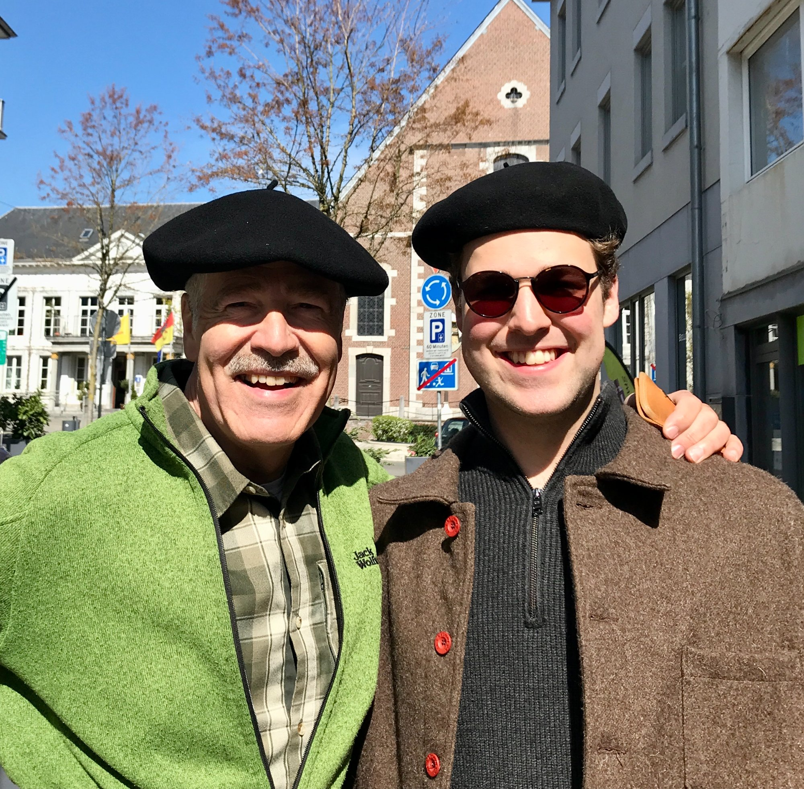

Handelshøyskolen BI, Oslo
Meny Lambertseter, Oslo
Medvind Eventbyrå / UN IGF
Kristian Grande
Norsk
English
Aarhus Universitet — A
Bloomberg for Education
Yale / Coursera



Ray Dalio
William Ackman / Big Think